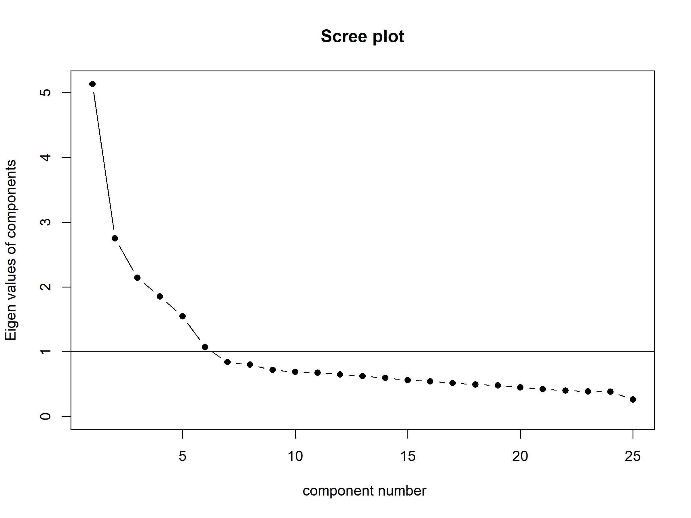
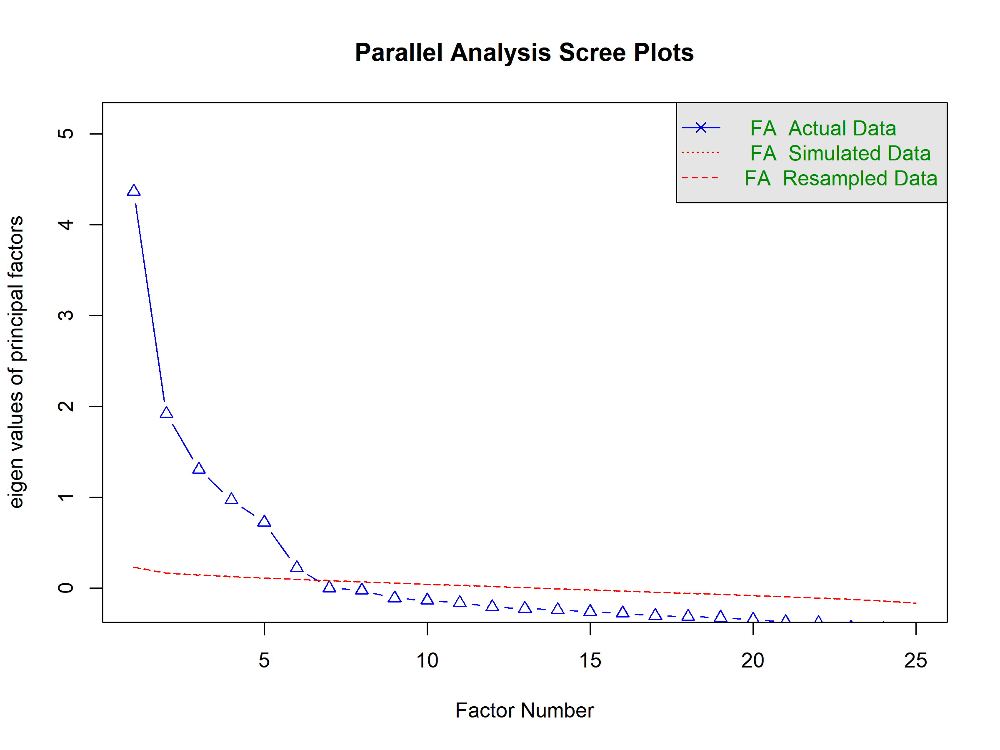
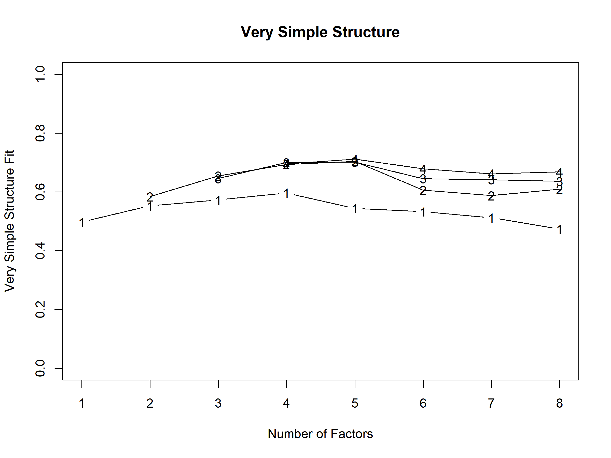
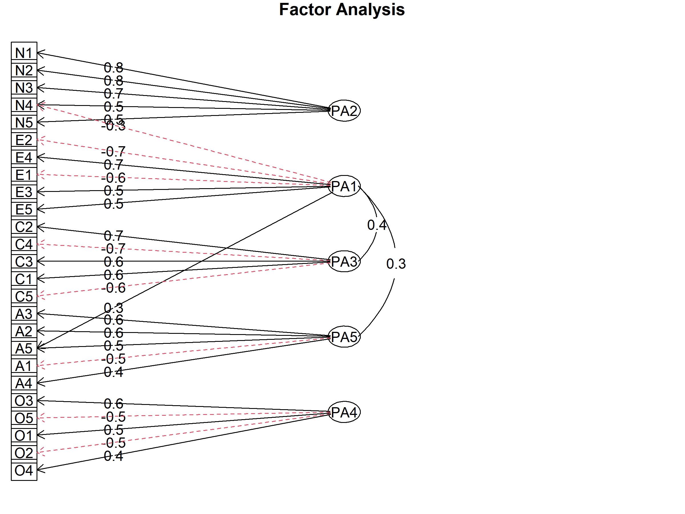
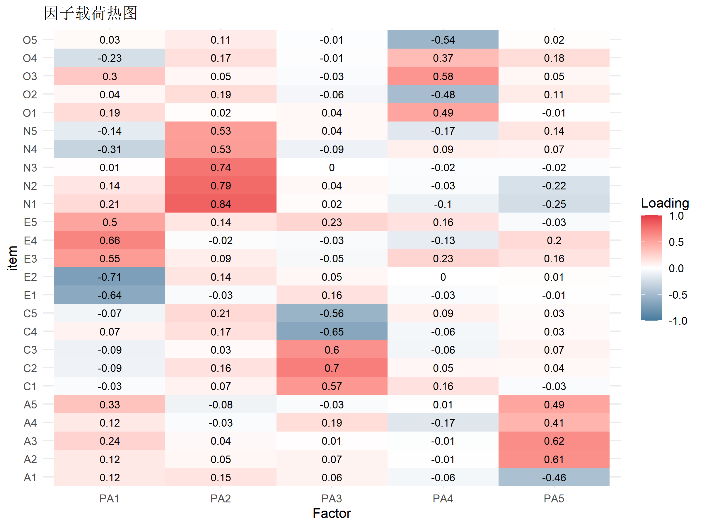
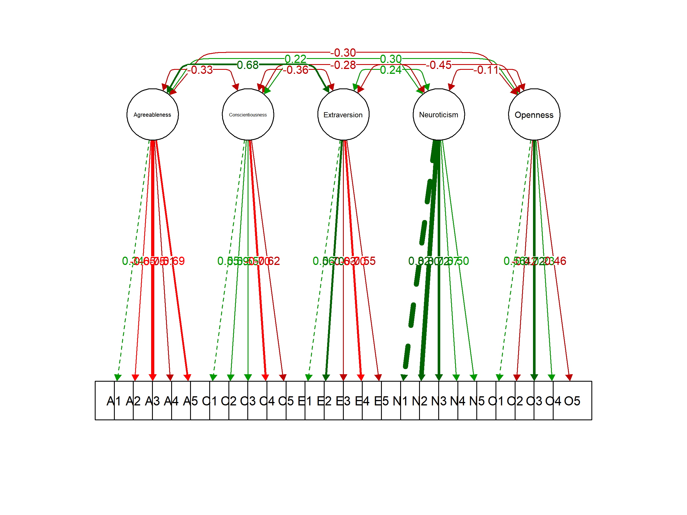

# install.packages("psych") # EFA
# install.packages("lavaan") # CFA
# install.packages("semPlot") # 路径图
library(psych)
library(lavaan)
library(semPlot)
library(dplyr)探索性与验证性因子分析完全指南
R包
统计模型
因子分析
使用 psych 和 lavaan 包进行 EFA 和 CFA，包括因子数确定、模型拟合与结果解读。
简介
因子分析是心理学、教育学和社会科学中最常用的统计方法之一，用于揭示观测变量背后的潜在结构。
EFA vs CFA
| 特性 | EFA (探索性因子分析) | CFA (验证性因子分析) |
|---|---|---|
| 目的 | 探索潜在结构 | 验证理论假设 |
| 假设 | 不预设因子结构 | 预设因子结构 |
| 适用阶段 | 量表开发初期 | 量表验证、理论检验 |
| 因子数 | 数据驱动确定 | 理论预先确定 |
| 交叉载荷 | 允许所有载荷自由估计 | 限制交叉载荷为0 |
| 拟合指数 | 较少关注 | 核心评估指标 |
分析流程
graph LR
A[理论构建] --> B[量表开发]
B --> C[样本1: EFA]
C --> D[确定因子结构]
D --> E[样本2: CFA]
E --> F[验证因子结构]
F --> G[修正/发表]安装与加载
示例数据
使用 psych 包自带的 bfi 数据集（大五人格问卷）。
data(bfi)
# 选取 25 个题目（5 个因子，每个 5 题）
items <- bfi[, 1:25]
head(items) A1 A2 A3 A4 A5 C1 C2 C3 C4 C5 E1 E2 E3 E4 E5 N1 N2 N3 N4 N5 O1 O2 O3 O4
61617 2 4 3 4 4 2 3 3 4 4 3 3 3 4 4 3 4 2 2 3 3 6 3 4
61618 2 4 5 2 5 5 4 4 3 4 1 1 6 4 3 3 3 3 5 5 4 2 4 3
61620 5 4 5 4 4 4 5 4 2 5 2 4 4 4 5 4 5 4 2 3 4 2 5 5
61621 4 4 6 5 5 4 4 3 5 5 5 3 4 4 4 2 5 2 4 1 3 3 4 3
61622 2 3 3 4 5 4 4 5 3 2 2 2 5 4 5 2 3 4 4 3 3 3 4 3
61623 6 6 5 6 5 6 6 6 1 3 2 1 6 5 6 3 5 2 2 3 4 3 5 6
O5
61617 3
61618 3
61620 2
61621 5
61622 3
61623 1变量说明： - A1-A5: 宜人性 (Agreeableness) - C1-C5: 尽责性 (Conscientiousness) - E1-E5: 外向性 (Extraversion) - N1-N5: 神经质 (Neuroticism) - O1-O5: 开放性 (Openness)
数据预处理
缺失值处理
# 检查缺失值
colSums(is.na(items))A1 A2 A3 A4 A5 C1 C2 C3 C4 C5 E1 E2 E3 E4 E5 N1 N2 N3 N4 N5 O1 O2 O3 O4 O5
16 27 26 19 16 21 24 20 26 16 23 16 25 9 21 22 21 11 36 29 22 0 28 14 20 # 删除含缺失的行（简单处理）
items_complete <- na.omit(items)
cat("完整案例数:", nrow(items_complete), "\n")完整案例数: 2436 描述统计
describe(items_complete)[, c("n", "mean", "sd", "min", "max")] n mean sd min max
A1 2436 2.41 1.41 1 6
A2 2436 4.80 1.18 1 6
A3 2436 4.60 1.31 1 6
A4 2436 4.69 1.49 1 6
A5 2436 4.54 1.27 1 6
C1 2436 4.53 1.24 1 6
C2 2436 4.37 1.32 1 6
C3 2436 4.30 1.29 1 6
C4 2436 2.55 1.38 1 6
C5 2436 3.31 1.63 1 6
E1 2436 2.98 1.63 1 6
E2 2436 3.15 1.61 1 6
E3 2436 3.98 1.35 1 6
E4 2436 4.41 1.47 1 6
E5 2436 4.39 1.34 1 6
N1 2436 2.94 1.58 1 6
N2 2436 3.52 1.53 1 6
N3 2436 3.22 1.59 1 6
N4 2436 3.20 1.57 1 6
N5 2436 2.97 1.62 1 6
O1 2436 4.81 1.13 1 6
O2 2436 2.68 1.55 1 6
O3 2436 4.45 1.21 1 6
O4 2436 4.93 1.19 1 6
O5 2436 2.47 1.32 1 6探索性因子分析 (EFA)
适用性检验
KMO 检验
Kaiser-Meyer-Olkin 检验评估数据是否适合因子分析。
KMO(items_complete)Kaiser-Meyer-Olkin factor adequacy
Call: KMO(r = items_complete)
Overall MSA = 0.85
MSA for each item =
A1 A2 A3 A4 A5 C1 C2 C3 C4 C5 E1 E2 E3 E4 E5 N1
0.75 0.84 0.87 0.88 0.90 0.84 0.80 0.85 0.83 0.86 0.84 0.88 0.90 0.88 0.89 0.78
N2 N3 N4 N5 O1 O2 O3 O4 O5
0.78 0.86 0.89 0.86 0.86 0.78 0.84 0.77 0.76 KMO 解释： - > 0.9：极好 - 0.8-0.9：好 - 0.7-0.8：中等 - 0.6-0.7：一般 - < 0.6：不适合因子分析
Bartlett 球形检验
检验相关矩阵是否为单位矩阵。
cortest.bartlett(items_complete)$chisq
[1] 18146.07
$p.value
[1] 0
$df
[1] 300解释：p < 0.05 表示相关矩阵不是单位矩阵，适合因子分析。
因子数确定
方法1：特征值 > 1 准则 (Kaiser 准则)
# 计算相关矩阵
cor_matrix <- cor(items_complete)
# 特征值分解
eigen_values <- eigen(cor_matrix)$values
print(eigen_values) [1] 5.1343112 2.7518867 2.1427020 1.8523276 1.5481628 1.0735825 0.8395389
[8] 0.7992062 0.7189892 0.6880888 0.6763734 0.6517998 0.6232530 0.5965628
[15] 0.5630908 0.5433053 0.5145175 0.4945031 0.4826395 0.4489210 0.4233661
[22] 0.4006715 0.3878045 0.3818568 0.2625390# 特征值 > 1 的因子数
sum(eigen_values > 1)[1] 6方法2：碎石图 (Scree Plot)
scree(items_complete, factors = FALSE)
解释：找到”拐点”，即曲线变平的位置。
方法3：平行分析 (推荐)
fa.parallel(items_complete, fa = "fa", n.iter = 100)
Parallel analysis suggests that the number of factors = 6 and the number of components = NA 解释：实际特征值超过随机模拟特征值的因子数。
方法4：MAP 检验
VSS(items_complete, n = 8, rotate = "promax")
Very Simple Structure
Call: vss(x = x, n = n, rotate = rotate, diagonal = diagonal, fm = fm,
n.obs = n.obs, plot = plot, title = title, use = use, cor = cor)
VSS complexity 1 achieves a maximimum of 0.6 with 4 factors
VSS complexity 2 achieves a maximimum of 0.7 with 5 factors
The Velicer MAP achieves a minimum of 0.01 with 5 factors
BIC achieves a minimum of -550.01 with 8 factors
Sample Size adjusted BIC achieves a minimum of -143.33 with 8 factors
Statistics by number of factors
vss1 vss2 map dof chisq prob sqresid fit RMSEA BIC SABIC complex
1 0.50 0.00 0.025 275 10656 0.0e+00 26 0.50 0.124 8512 9386 1.0
2 0.55 0.58 0.019 251 6669 0.0e+00 22 0.58 0.102 4712 5509 1.2
3 0.57 0.65 0.018 228 4585 0.0e+00 18 0.65 0.089 2807 3531 1.2
4 0.60 0.69 0.016 206 3033 0.0e+00 16 0.69 0.075 1426 2081 1.3
5 0.54 0.70 0.015 185 1539 8.6e-212 15 0.71 0.055 96 684 1.4
6 0.53 0.61 0.016 165 917 1.6e-104 16 0.69 0.043 -370 154 1.7
7 0.51 0.59 0.019 146 631 1.8e-61 17 0.68 0.037 -508 -44 1.7
8 0.47 0.61 0.022 128 448 4.0e-37 17 0.68 0.032 -550 -143 1.7
eChisq SRMR eCRMS eBIC
1 21181 0.120 0.126 19037
2 11015 0.087 0.095 9058
3 6268 0.065 0.075 4490
4 3129 0.046 0.056 1523
5 1132 0.028 0.035 -311
6 553 0.019 0.026 -734
7 372 0.016 0.023 -767
8 238 0.013 0.020 -760综合判断：多种方法的结果应该综合考虑，选择最合理的因子数。
因子提取
主轴因子法 (推荐)
# 提取 5 个因子，使用 promax 斜交旋转
fa_result <- fa(items_complete,
nfactors = 5,
rotate = "promax", # 斜交旋转
fm = "pa"
) # 主轴因子法
print(fa_result, cut = 0.3) # 只显示 > 0.3 的载荷Factor Analysis using method = pa
Call: fa(r = items_complete, nfactors = 5, rotate = "promax", fm = "pa")
Standardized loadings (pattern matrix) based upon correlation matrix
PA2 PA1 PA3 PA5 PA4 h2 u2 com
A1 -0.46 0.20 0.80 1.4
A2 0.61 0.46 0.54 1.1
A3 0.62 0.54 0.46 1.3
A4 0.41 0.30 0.70 2.0
A5 0.33 0.49 0.47 0.53 1.8
C1 0.57 0.35 0.65 1.2
C2 0.70 0.45 0.55 1.2
C3 0.60 0.32 0.68 1.1
C4 -0.65 0.48 0.52 1.2
C5 -0.56 0.44 0.56 1.4
E1 -0.64 0.35 0.65 1.1
E2 -0.71 0.55 0.45 1.1
E3 0.55 0.44 0.56 1.6
E4 0.66 0.54 0.46 1.3
E5 0.50 0.41 0.59 1.8
N1 0.84 0.68 0.32 1.3
N2 0.79 0.61 0.39 1.2
N3 0.74 0.54 0.46 1.0
N4 0.53 -0.31 0.51 0.49 1.8
N5 0.53 0.35 0.65 1.5
O1 0.49 0.32 0.68 1.3
O2 -0.48 0.27 0.73 1.5
O3 0.58 0.47 0.53 1.5
O4 0.37 0.25 0.75 2.7
O5 -0.54 0.30 0.70 1.1
PA2 PA1 PA3 PA5 PA4
SS loadings 2.69 2.59 2.02 1.79 1.50
Proportion Var 0.11 0.10 0.08 0.07 0.06
Cumulative Var 0.11 0.21 0.29 0.36 0.42
Proportion Explained 0.25 0.24 0.19 0.17 0.14
Cumulative Proportion 0.25 0.50 0.69 0.86 1.00
With factor correlations of
PA2 PA1 PA3 PA5 PA4
PA2 1.00 -0.26 -0.22 -0.01 0.04
PA1 -0.26 1.00 0.40 0.35 0.14
PA3 -0.22 0.40 1.00 0.24 0.19
PA5 -0.01 0.35 0.24 1.00 0.16
PA4 0.04 0.14 0.19 0.16 1.00
Mean item complexity = 1.4
Test of the hypothesis that 5 factors are sufficient.
df null model = 300 with the objective function = 7.48 with Chi Square = 18146.07
df of the model are 185 and the objective function was 0.64
The root mean square of the residuals (RMSR) is 0.03
The df corrected root mean square of the residuals is 0.04
The harmonic n.obs is 2436 with the empirical chi square 1131.91 with prob < 1.1e-135
The total n.obs was 2436 with Likelihood Chi Square = 1538.69 with prob < 8e-212
Tucker Lewis Index of factoring reliability = 0.877
RMSEA index = 0.055 and the 90 % confidence intervals are 0.052 0.057
BIC = 96.03
Fit based upon off diagonal values = 0.98
Measures of factor score adequacy
PA2 PA1 PA3 PA5 PA4
Correlation of (regression) scores with factors 0.93 0.91 0.89 0.87 0.84
Multiple R square of scores with factors 0.86 0.83 0.79 0.75 0.70
Minimum correlation of possible factor scores 0.72 0.66 0.58 0.51 0.40最大似然法
fa_ml <- fa(items_complete,
nfactors = 5,
rotate = "promax",
fm = "ml"
) # 最大似然法
# 比较拟合
cat("PA 法 RMSEA:", fa_result$RMSEA[1], "\n")PA 法 RMSEA: 0.05480526 cat("ML 法 RMSEA:", fa_ml$RMSEA[1], "\n")ML 法 RMSEA: 0.05382273 旋转方法
正交旋转 vs 斜交旋转
# 正交旋转（因子不相关）
fa_varimax <- fa(items_complete, nfactors = 5, rotate = "varimax")
# 斜交旋转（因子可相关）
fa_promax <- fa(items_complete, nfactors = 5, rotate = "promax")
# 比较因子相关
cat("Varimax 因子相关:\n")Varimax 因子相关:print(fa_varimax$Phi)NULLcat("\nPromax 因子相关:\n")
Promax 因子相关:print(round(fa_promax$Phi, 3)) MR2 MR1 MR3 MR5 MR4
MR2 1.000 -0.256 -0.224 -0.013 0.040
MR1 -0.256 1.000 0.399 0.345 0.142
MR3 -0.224 0.399 1.000 0.236 0.192
MR5 -0.013 0.345 0.236 1.000 0.155
MR4 0.040 0.142 0.192 0.155 1.000选择建议： - 理论上因子应相关 → 斜交旋转 (promax, oblimin) - 需要因子正交 → 正交旋转 (varimax)
结果解读
因子载荷矩阵
# 查看因子载荷
loadings <- fa_result$loadings
print(loadings, cut = 0.3)
Loadings:
PA2 PA1 PA3 PA5 PA4
A1 -0.463
A2 0.611
A3 0.620
A4 0.411
A5 0.332 0.489
C1 0.567
C2 0.697
C3 0.597
C4 -0.652
C5 -0.561
E1 -0.636
E2 -0.711
E3 0.545
E4 0.660
E5 0.498
N1 0.835
N2 0.791
N3 0.741
N4 0.533 -0.311
N5 0.529
O1 0.491
O2 -0.484
O3 0.576
O4 0.370
O5 -0.543
PA2 PA1 PA3 PA5 PA4
SS loadings 2.704 2.486 2.050 1.638 1.461
Proportion Var 0.108 0.099 0.082 0.066 0.058
Cumulative Var 0.108 0.208 0.290 0.355 0.414载荷解释： - > 0.7：优秀 - 0.6-0.7：良好 - 0.4-0.6：可接受 - < 0.4：考虑删除
共同度
# 每个变量被因子解释的方差比例
fa_result$communalities[1] 10.59006标准：共同度 < 0.2 的变量考虑删除。
因子得分
# 计算因子得分
factor_scores <- factor.scores(items_complete, fa_result)$scores
head(factor_scores) PA2 PA1 PA3 PA5 PA4
61617 -0.43958636 -0.2227535 -1.46918220 -1.0398564 -1.9486251
61618 0.07605077 0.4354195 -0.62143534 -0.2315558 -0.3297932
61620 0.52227907 0.1737052 -0.03530488 -0.7979095 0.2324926
61621 -0.16388898 -0.1413499 -1.17247939 -0.1013337 -1.3034475
61622 -0.42091443 0.3272949 -0.09403904 -0.9823147 -0.8739858
61623 0.03826001 1.3614244 1.62152869 0.1130949 0.4775330EFA 可视化
因子载荷图
fa.diagram(fa_result, simple = FALSE, cut = 0.3)
热图展示
# 提取载荷矩阵
load_mat <- unclass(fa_result$loadings)
# 使用 ggplot2 绘制
library(ggplot2)
library(tidyr)
load_df <- as.data.frame(load_mat) %>%
mutate(item = rownames(load_mat)) %>%
pivot_longer(-item, names_to = "Factor", values_to = "Loading")
ggplot(load_df, aes(x = Factor, y = item, fill = Loading)) +
geom_tile() +
geom_text(aes(label = round(Loading, 2)), size = 3) +
scale_fill_gradient2(
low = "#457b9d", mid = "white", high = "#e63946",
midpoint = 0, limits = c(-1, 1)
) +
labs(title = "因子载荷热图") +
theme_minimal()
验证性因子分析 (CFA)
模型设定
基于 EFA 结果或理论假设，设定 CFA 模型。
# 定义 CFA 模型
cfa_model <- "
# 测量模型
Agreeableness =~ A1 + A2 + A3 + A4 + A5
Conscientiousness =~ C1 + C2 + C3 + C4 + C5
Extraversion =~ E1 + E2 + E3 + E4 + E5
Neuroticism =~ N1 + N2 + N3 + N4 + N5
Openness =~ O1 + O2 + O3 + O4 + O5
"模型拟合
# 拟合 CFA 模型
cfa_fit <- cfa(cfa_model, data = items_complete)
# 查看结果摘要
summary(cfa_fit, fit.measures = TRUE, standardized = TRUE)lavaan 0.6-21 ended normally after 55 iterations
Estimator ML
Optimization method NLMINB
Number of model parameters 60
Number of observations 2436
Model Test User Model:
Test statistic 4165.467
Degrees of freedom 265
P-value (Chi-square) 0.000
Model Test Baseline Model:
Test statistic 18222.116
Degrees of freedom 300
P-value 0.000
User Model versus Baseline Model:
Comparative Fit Index (CFI) 0.782
Tucker-Lewis Index (TLI) 0.754
Loglikelihood and Information Criteria:
Loglikelihood user model (H0) -99840.238
Loglikelihood unrestricted model (H1) -97757.504
Akaike (AIC) 199800.476
Bayesian (BIC) 200148.363
Sample-size adjusted Bayesian (SABIC) 199957.729
Root Mean Square Error of Approximation:
RMSEA 0.078
90 Percent confidence interval - lower 0.076
90 Percent confidence interval - upper 0.080
P-value H_0: RMSEA <= 0.050 0.000
P-value H_0: RMSEA >= 0.080 0.037
Standardized Root Mean Square Residual:
SRMR 0.075
Parameter Estimates:
Standard errors Standard
Information Expected
Information saturated (h1) model Structured
Latent Variables:
Estimate Std.Err z-value P(>|z|) Std.lv Std.all
Agreeableness =~
A1 1.000 0.484 0.344
A2 -1.579 0.108 -14.650 0.000 -0.764 -0.648
A3 -2.030 0.134 -15.093 0.000 -0.983 -0.749
A4 -1.564 0.115 -13.616 0.000 -0.757 -0.510
A5 -1.804 0.121 -14.852 0.000 -0.873 -0.687
Conscientiousness =~
C1 1.000 0.680 0.551
C2 1.148 0.057 20.152 0.000 0.781 0.592
C3 1.036 0.054 19.172 0.000 0.705 0.546
C4 -1.421 0.065 -21.924 0.000 -0.967 -0.702
C5 -1.489 0.072 -20.694 0.000 -1.012 -0.620
Extraversion =~
E1 1.000 0.920 0.564
E2 1.226 0.051 23.899 0.000 1.128 0.699
E3 -0.921 0.041 -22.431 0.000 -0.847 -0.627
E4 -1.121 0.047 -23.977 0.000 -1.031 -0.703
E5 -0.808 0.039 -20.648 0.000 -0.743 -0.553
Neuroticism =~
N1 1.000 1.300 0.825
N2 0.947 0.024 39.899 0.000 1.230 0.803
N3 0.884 0.025 35.919 0.000 1.149 0.721
N4 0.692 0.025 27.753 0.000 0.899 0.573
N5 0.628 0.026 24.027 0.000 0.816 0.503
Openness =~
O1 1.000 0.635 0.564
O2 -1.020 0.068 -14.962 0.000 -0.648 -0.418
O3 1.373 0.072 18.942 0.000 0.872 0.724
O4 0.437 0.048 9.160 0.000 0.277 0.233
O5 -0.960 0.060 -16.056 0.000 -0.610 -0.461
Covariances:
Estimate Std.Err z-value P(>|z|) Std.lv Std.all
Agreeableness ~~
Conscientisnss -0.110 0.012 -9.254 0.000 -0.334 -0.334
Extraversion 0.304 0.025 12.293 0.000 0.683 0.683
Neuroticism 0.141 0.018 7.712 0.000 0.223 0.223
Openness -0.093 0.011 -8.446 0.000 -0.303 -0.303
Conscientiousness ~~
Extraversion -0.224 0.020 -11.121 0.000 -0.357 -0.357
Neuroticism -0.250 0.025 -10.117 0.000 -0.283 -0.283
Openness 0.130 0.014 9.190 0.000 0.301 0.301
Extraversion ~~
Neuroticism 0.292 0.032 9.131 0.000 0.244 0.244
Openness -0.265 0.021 -12.347 0.000 -0.453 -0.453
Neuroticism ~~
Openness -0.093 0.022 -4.138 0.000 -0.112 -0.112
Variances:
Estimate Std.Err z-value P(>|z|) Std.lv Std.all
.A1 1.745 0.052 33.725 0.000 1.745 0.882
.A2 0.807 0.028 28.396 0.000 0.807 0.580
.A3 0.754 0.032 23.339 0.000 0.754 0.438
.A4 1.632 0.051 31.796 0.000 1.632 0.740
.A5 0.852 0.032 26.800 0.000 0.852 0.528
.C1 1.063 0.035 30.073 0.000 1.063 0.697
.C2 1.130 0.039 28.890 0.000 1.130 0.650
.C3 1.170 0.039 30.194 0.000 1.170 0.702
.C4 0.960 0.040 24.016 0.000 0.960 0.507
.C5 1.640 0.059 27.907 0.000 1.640 0.615
.E1 1.814 0.058 31.047 0.000 1.814 0.682
.E2 1.332 0.049 26.928 0.000 1.332 0.512
.E3 1.108 0.038 29.522 0.000 1.108 0.607
.E4 1.088 0.041 26.732 0.000 1.088 0.506
.E5 1.251 0.040 31.258 0.000 1.251 0.694
.N1 0.793 0.037 21.575 0.000 0.793 0.320
.N2 0.836 0.036 23.458 0.000 0.836 0.356
.N3 1.222 0.043 28.271 0.000 1.222 0.481
.N4 1.654 0.052 31.977 0.000 1.654 0.672
.N5 1.969 0.060 32.889 0.000 1.969 0.747
.O1 0.865 0.032 27.216 0.000 0.865 0.682
.O2 1.990 0.063 31.618 0.000 1.990 0.826
.O3 0.691 0.039 17.717 0.000 0.691 0.476
.O4 1.346 0.040 34.036 0.000 1.346 0.946
.O5 1.380 0.045 30.662 0.000 1.380 0.788
Agreeableness 0.234 0.030 7.839 0.000 1.000 1.000
Conscientisnss 0.463 0.036 12.810 0.000 1.000 1.000
Extraversion 0.846 0.062 13.693 0.000 1.000 1.000
Neuroticism 1.689 0.073 23.034 0.000 1.000 1.000
Openness 0.404 0.033 12.156 0.000 1.000 1.000拟合指数解读
提取拟合指数
# 提取常用拟合指数
fit_indices <- fitMeasures(cfa_fit, c(
"chisq", "df", "pvalue",
"cfi", "tli", "rmsea",
"rmsea.ci.lower", "rmsea.ci.upper",
"srmr"
))
round(fit_indices, 3) chisq df pvalue cfi tli
4165.467 265.000 0.000 0.782 0.754
rmsea rmsea.ci.lower rmsea.ci.upper srmr
0.078 0.076 0.080 0.075 拟合标准
| 指标 | 优秀 | 可接受 | 说明 |
|---|---|---|---|
| χ²/df | < 2 | < 3 | 卡方/自由度比 |
| CFI | > 0.95 | > 0.90 | 比较拟合指数 |
| TLI | > 0.95 | > 0.90 | Tucker-Lewis 指数 |
| RMSEA | < 0.05 | < 0.08 | 近似误差均方根 |
| SRMR | < 0.05 | < 0.08 | 标准化残差均方根 |
因子载荷
# 标准化因子载荷
std_loadings <- standardizedSolution(cfa_fit)
std_loadings[std_loadings$op == "=~", c("lhs", "rhs", "est.std", "pvalue")] lhs rhs est.std pvalue
1 Agreeableness A1 0.344 0
2 Agreeableness A2 -0.648 0
3 Agreeableness A3 -0.749 0
4 Agreeableness A4 -0.510 0
5 Agreeableness A5 -0.687 0
6 Conscientiousness C1 0.551 0
7 Conscientiousness C2 0.592 0
8 Conscientiousness C3 0.546 0
9 Conscientiousness C4 -0.702 0
10 Conscientiousness C5 -0.620 0
11 Extraversion E1 0.564 0
12 Extraversion E2 0.699 0
13 Extraversion E3 -0.627 0
14 Extraversion E4 -0.703 0
15 Extraversion E5 -0.553 0
16 Neuroticism N1 0.825 0
17 Neuroticism N2 0.803 0
18 Neuroticism N3 0.721 0
19 Neuroticism N4 0.573 0
20 Neuroticism N5 0.503 0
21 Openness O1 0.564 0
22 Openness O2 -0.418 0
23 Openness O3 0.724 0
24 Openness O4 0.233 0
25 Openness O5 -0.461 0标准：标准化载荷 > 0.5（最低 0.4）。
信效度评估
组合信度 (CR)
# 计算组合信度
calc_CR <- function(fit, factor_name) {
params <- parameterEstimates(fit, standardized = TRUE)
loadings <- params[params$op == "=~" & params$lhs == factor_name, "std.all"]
sum_loadings <- sum(loadings)
sum_errors <- sum(1 - loadings^2)
CR <- sum_loadings^2 / (sum_loadings^2 + sum_errors)
return(CR)
}
factors <- c(
"Agreeableness", "Conscientiousness", "Extraversion",
"Neuroticism", "Openness"
)
CR_values <- sapply(factors, function(f) calc_CR(cfa_fit, f))
print(round(CR_values, 3)) Agreeableness Conscientiousness Extraversion Neuroticism
0.615 0.041 0.114 0.820
Openness
0.100 标准：CR > 0.7
平均方差萃取量 (AVE)
# 计算 AVE
calc_AVE <- function(fit, factor_name) {
params <- parameterEstimates(fit, standardized = TRUE)
loadings <- params[params$op == "=~" & params$lhs == factor_name, "std.all"]
AVE <- mean(loadings^2)
return(AVE)
}
AVE_values <- sapply(factors, function(f) calc_AVE(cfa_fit, f))
print(round(AVE_values, 3)) Agreeableness Conscientiousness Extraversion Neuroticism
0.367 0.366 0.400 0.485
Openness
0.257 标准： - AVE > 0.5：收敛效度良好 - AVE 的平方根 > 因子间相关：区分效度良好
因子相关矩阵
# 因子相关
factor_cor <- lavInspect(cfa_fit, "cor.lv")
print(round(factor_cor, 3)) Agrbln Cnscnt Extrvr Nrtcsm Opnnss
Agreeableness 1.000
Conscientiousness -0.334 1.000
Extraversion 0.683 -0.357 1.000
Neuroticism 0.223 -0.283 0.244 1.000
Openness -0.303 0.301 -0.453 -0.112 1.000区分效度检验
# 比较 AVE 平方根与因子相关
AVE_sqrt <- sqrt(AVE_values)
cat("AVE 平方根:\n")AVE 平方根:print(round(AVE_sqrt, 3)) Agreeableness Conscientiousness Extraversion Neuroticism
0.605 0.605 0.633 0.696
Openness
0.507 cat("\n最大因子相关:\n")
最大因子相关:# 获取最大相关（排除对角线）
factor_cor_nodiag <- factor_cor
diag(factor_cor_nodiag) <- 0
print(round(apply(abs(factor_cor_nodiag), 1, max), 3)) Agreeableness Conscientiousness Extraversion Neuroticism
0.683 0.357 0.683 0.283
Openness
0.453 CFA 可视化
路径图
semPaths(cfa_fit,
what = "std", # 标准化系数
layout = "tree2",
edge.label.cex = 0.8,
curvePivot = TRUE,
fade = FALSE,
style = "lisrel",
sizeLat = 8,
sizeMan = 6,
nCharNodes = 0,
residuals = FALSE
)
模型修正
修正指数
# 查看修正指数
mi <- modindices(cfa_fit, sort = TRUE, minimum.value = 10)
head(mi, 10) lhs op rhs mi epc sepc.lv sepc.all sepc.nox
421 N1 ~~ N2 418.812 0.841 0.841 1.033 1.033
119 Extraversion =~ N4 200.790 0.487 0.448 0.285 0.285
158 Openness =~ E3 153.715 0.672 0.427 0.316 0.316
438 N3 ~~ N4 134.104 0.403 0.403 0.283 0.283
159 Openness =~ E4 122.558 -0.636 -0.404 -0.276 -0.276
95 Conscientiousness =~ E5 121.499 0.504 0.343 0.255 0.255
123 Extraversion =~ O3 114.202 -0.429 -0.395 -0.328 -0.328
124 Extraversion =~ O4 113.863 0.372 0.343 0.287 0.287
135 Neuroticism =~ C5 108.754 0.271 0.352 0.216 0.216
110 Extraversion =~ A5 108.587 -0.488 -0.449 -0.354 -0.354[!WARNING] 修正指数应谨慎使用！仅在有理论支持时添加路径，避免过度拟合。
添加残差相关
# 修正模型示例
cfa_model_modified <- "
Agreeableness =~ A1 + A2 + A3 + A4 + A5
Conscientiousness =~ C1 + C2 + C3 + C4 + C5
Extraversion =~ E1 + E2 + E3 + E4 + E5
Neuroticism =~ N1 + N2 + N3 + N4 + N5
Openness =~ O1 + O2 + O3 + O4 + O5
# 根据理论添加残差相关
# E1 ~~ E2
"
cfa_fit_mod <- cfa(cfa_model_modified, data = items_complete)模型比较
# 比较原始模型和修正模型
# anova(cfa_fit, cfa_fit_mod) # 若模型嵌套多组 CFA
检验因子结构在不同组别是否等值。
# 添加性别变量
items_with_gender <- cbind(items_complete, gender = bfi$gender[complete.cases(bfi[, 1:25])])
items_with_gender <- items_with_gender[!is.na(items_with_gender$gender), ]
# 型态等值（因子结构相同）
fit_config <- cfa(cfa_model, data = items_with_gender, group = "gender")
# 弱等值（载荷相等）
fit_metric <- cfa(cfa_model,
data = items_with_gender, group = "gender",
group.equal = "loadings"
)
# 比较
anova(fit_config, fit_metric)
Chi-Squared Difference Test
Df AIC BIC Chisq Chisq diff RMSEA Df diff Pr(>Chisq)
fit_config 530 199494 200479 4545.3
fit_metric 550 199471 200341 4562.6 17.307 0 20 0.6329报告模板
## CFA 结果报告
### 模型拟合
使用最大似然法估计五因子模型。模型拟合指数如下：
χ²( 265 ) = 4165.47 , p < .001,
CFI = 0.782 ,
TLI = 0.754 ,
RMSEA = 0.078 (90% CI [ 0.076 , 0.08 ]),
SRMR = 0.075 。
### 信效度
所有因子的组合信度 (CR) 均大于 0.7，AVE 均大于 0.4。EFA vs CFA 选择指南
┌─────────────────────────────────────────────────┐
│ 选择决策树 │
├─────────────────────────────────────────────────┤
│ 1. 是否有先验的因子结构假设？ │
│ ├─ 否 → EFA（探索结构） │
│ └─ 是 → CFA（验证结构） │
│ │
│ 2. 量表开发阶段？ │
│ ├─ 初期开发 → EFA │
│ └─ 验证修订 → CFA │
│ │
│ 3. 是否需要跨组比较？ │
│ └─ 是 → 多组 CFA │
└─────────────────────────────────────────────────┘总结
| 阶段 | 方法 | 目的 |
|---|---|---|
| 量表开发 | EFA | 探索因子结构 |
| 量表验证 | CFA | 验证因子结构 |
| 跨文化研究 | 多组CFA | 检验测量等值 |
| 理论检验 | CFA | 验证测量模型 |
[!TIP] 最佳实践： 1. EFA 和 CFA 应使用不同样本 2. 因子数确定综合多种方法 3. 拟合不佳时先检查数据质量 4. 模型修正需有理论支持
参考文献
- Brown, T. A. (2015). Confirmatory Factor Analysis for Applied Research (2nd ed.). Guilford Press.
- Fabrigar, L. R., & Wegener, D. T. (2012). Exploratory Factor Analysis. Oxford University Press.
- Revelle, W. (2023). psych: Procedures for Psychological, Psychometric, and Personality Research. R package.